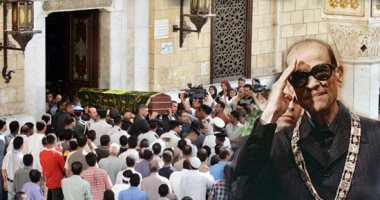
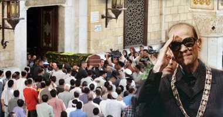

السيرة الذاتية لنجيب محفوظ:
- ولد نجيب محفوظ أو كما يطلق عليه كاتب نوبل في حي الجمالية بالقاهرة في 11ديسمبر 1911
- ولد لعائلة متوسطة الدخل كان والده(عبد العزيز ابراهيم) يعمل موظفا و والدته كانت ابنة عالم من علماء الازهر
- التحق بجامعة القاهرة في 1930 وحصل علي ليسانس الفلسفة و فيما بعد غير رأيه و اتجه الي الأدب
- كتب نجيب محفوظ منذ الثلاثينات و استمر حتي عام 2004
- انضم الي مجلة الرسالة في 1939و نشر روايته الاولي غبث الأقدارثم نشر كفاح طيبة و و رادوبيس و....و...و...و الخ
- و بدءا من 1945 بدأ نجيب محفوظ خطه الروائي الواقعي الذي حافظ عليه معظم مسيرته الأدبية برواية القاهرة الجديدةو ثم خان الخليلي و زقاق المدق و جرب نجيب محفوظ الواقعية النفسية في رواية السراب ثم عاد الي الواقعية الاجتماعية مع بداية: ونهايةو ثلاثية القاهرة
فيما بعد اتجه الي الرمزية في رواياته:الشحاذ و أولاد حارتنا والتي سببت ردود فعل قوية وكانت سببا ف التحريض علي محاولة اغتياله كما اتجه في مرحلة متقدمة من مشواره الأدبي الي مفاهيم جديدة كالكتابة علي حدود الفنتازيا كما في رواياته :
الحرافيش و ليالي ألف ليلة وليلة
و كتابة البوح الصوفي و الأحلام كما في : في أصداءالسيرة الذاتية و أحلام فترة النقاهة
- و تعتبر مؤلفات محفوظ بمثابة مرآة للحياة الاجتماعية و السياسية في مصر و من ناحية أخري يمكن اعتبارها تدوينا معاصرا لهم الوجود الانساني
- و ترجمت قصصه و رواياته الي أكثر من 33لغة
مسيرته المهنية:
أولاد حارتنا:
- توقف نجيب محفوظ عن الكتابة بعد الثلاثية، ودخل في حالة صمت أدبي، وانتقل خلاله من الواقعية الاجتماعية إلى الواقعية الرمزية. ثم بدأ نشر روايته الجديدة أولاد حارتنا في جريدة الأهرام في 1959.
- وفيها استسلم نجيب لهواية استعمال الحكايات الكبرى من تاريخ الإنسانية في قراءة اللحظة السياسية، والاجتماعية لمصر ما بعد الثورة، ليطرح سؤال على رجال الثورة عن الطريق الذي يرغبون في السير فيه (طريق الفتوات أم طريق الحرافيش؟)، وأثارت الرواية ردود أفعالٍ قوية تسببت في وقف نشرها والتوجيه بعدم نشرها كاملة في مصر، رغم صدورها في 1967، في دار الآداب اللبنانية.
- جاءت ردود الفعل القوية من التفسيرات المباشرة للرموز الدينية في الرواية، وشخصياتها أمثال: الجبلاوي، أدهم، إدريس، جبل، رفاعة، قاسم، وعرفة. وشكل موت الجبلاوي فيها صدمة عقائدية لكثير من الأطراف الدينية.
- أولاد حارتنا واحدة من أربع رواياتٍ تسببت في فوز نجيب محفوظ بجائزة نوبل للأدب، كما أنها كانت السبب المباشر في التحريض على محاولة اغتياله.
- وبعدها لم يتخل تماماً عن واقعيته الرمزية، فنشر ملحمة الحرافيش في 1977، بعد عشر سنواتٍ من نشر أولاد حارتنا كاملة.
- قد رفض نشرها بعد ذلك حرصا على وعد قطعه للسيد كمال أبو المجد مندوب الرئيس عبد الناصر بعدم نشر الرواية داخل مصر.
التقدير النقدي:
- مع أنه بدأ الكتابة في وقتٍ مبكر، إلا أن نجيب محفوظ لم يلق اهتماماً حتى قرب نهاية الخمسينيات، فظل مُتجاهلاً من قبل النُقاد لما يُقارب خمسة عشر عاماً قبل أن يبدأ الاهتمام النقدي بأعماله في الظهور والتزايد.
- كتب سيد قطب عنه في مجلة الرسالة في 1944، وكان أول ناقد يتحدث عن رواية القاهرة الجديدة، واختلف مع صلاح الدين ذهني بسبب رواية كفاح طيبة. وكتب عنه محمد الجوادي، في ظلال السياسة: نجيب محفوظ الروائي بين المثالية والواقعية، وهو دراسة أدبية نقدية تحليلية. وكتبت عنه جريدة الحياة في ذكرى وفاته الثامنة: «من هو نجيب محفوظ».
السفر إلى الخارج:
عُرف عن الأديب نجيب محفوظ ميله الشديد لعدم السفر إلى الخارج، لدرجة أنه لم يحضر لاستلام جائزة نوبل، وأوفد ابنتيه لاستلامها. ومع ذلك فقد سافر ضمن وفد من الكتاب المصريين إلى كل من: اليمن، ويوغوسلافيا في مطلع الستينيات، ومرة أخرى إلى لندن لإجراء عملية جراحية في القلب عام 1989.
محاولة اغتياله:
في 21 سبتمبر 1950 بدأ نشر رواية أولاد حارتنا مسلسلةً في جريدة الأهرام، وثم توقف النشر في 25 ديسمبر من العام نفسه بسبب اعتراضات هيئات دينية على «تطاوله على الذات الإلهية». لم تُنشر الرواية كاملة في مصر في تلك الفترة، واقتُضي الأمر ثمان سنين أخرى حتى تظهر كاملة في طبعة دار الآداب اللبنانية، والتي طبعتها في بيروت عام 1967. وأُعيد نشر أولاد حارتنا في مصر، في عام 2006، عن طريق دار الشروق.
في أكتوبر 1995 طُعن نجيب محفوظ في عنقه على يد شابين قد قررا اغتياله، لاتهامه بالكفر والخروج عن الملة بسبب روايته المثيرة للجدل. الجدير بالذكر هنا أن طبيعة نجيب محفوظ الهادئة كان لها أثر كبير في عدم نشر الرواية في طبعة مصرية لسنوات عديدة، حيث كان قد ارتبط بوعد مع «حسن صبري الخولي» (الممثل الشخصي للرئيس الراحل جمال عبد الناصر) بعدم نشر الرواية في مصر إلا بعد أخذ موافقة الجامع الأزهر. فطُبعت الرواية في لبنان من إصدار دار الآداب عام 1962، ومُنع دخولها إلى مصر رغم أن نسخاً مهربة منها وجدت طريقها إلى الأسواق المصرية. لم يمت نجيب محفوظ كنتيجة للمحاولة، ولكن أعصابه على الطرف الأيمن العلوي من الرقبة قد تضررت بشدة أثر هذه الطعنة. كان لهذا تأثيرٌ سلبي على عمله، حيث أنه لم يكن قادرًا على الكتابة سوى لبضع دقائق يوميًا. وفيما بعد أُعدم الشابان المشتركان في محاولة الاغتيال رغم تعليقه بأنه غير حاقدٍ على من حاول قتله، وأنه يتمنى لو أنه لم يُعدما. وخلال إقامته الطويلة في المستشفى زاره محمد الغزالي، والذي كان ممن طالبوا بمنع نشر أولاد حارتنا، وعبد المنعم أبو الفتوح، وهو القيادي السابق في حركة الإخوان المسلمين، وهي زيارة تسببت في هجوم شديد من جانب بعض المتشددين على أبو الفتوح.
الوظائف التي التحق بها:
- شغل محفوظ منصب سكرتير برلماني في وزارة الأوقاف في 1938، وحتى 1945.
- كما شغل منصب مدير مؤسسة القرض الحسن في وزارة الأوقاف حتي 1954.
- وشغل منصب مدير مكتب وزير الإرشاد. ثم منصب مدير للرقابة على المصنفات الفنية في وزارة الثقافة.
- وعمل كمدير عام في مؤسسة دعم السينما في 1960، ثم رئيس مجلس الإدارة العامة للسينما والإذاعة والتلفزيون.
- آخر منصبٍ حكومي شغله محفوظ كان رئيس مجلس إدارة المؤسسة العامة للسينما في 1966، وحتى 1971. ثم تقاعد بعدها ليصبح أحد كتاب مؤسسة الأهرام.
حياته الشخصية:
تزوج نجيب محفوظ في فترة توقفه عن الكتابة بعد ثورة 1952 من السيدة «عطية الله إبراهيم»، وأخفى خبر زواجه عمَّن حوله لعشر سنوات، متعللاً عن عدم زواجه بانشغاله برعاية أمه وأخته الأرملة وأطفالها. في تلك الفترة كان دخله قد ازداد من عمله في كتابة سيناريوهات الأفلام، وأصبح لديه من المال ما يكفي لتأسيس عائلة. ولم يُعرف عن زواجه إلا بعد عشر سنواتٍ من حدوثه، عندما تشاجرت إحدى ابنتيه «أم كلثوم» مع زميلة لها في المدرسة، فعرف الشاعر صلاح جاهين بالأمر من والد الطالبة، وانتشر الخبر بين المعارف.
مناصبه:
- سكرتير برلماني في وزارة الأوقاف (1938 – 1945).
- مدير لمؤسسة القرض الحسن في الوزارة حتى 1954.
- مدير لمكتب وزير الإرشاد.
- مدير للرقابة على المصنفات الفنية في وزارة الثقافة.
- في 1960 عمل مديراً عاماً لمؤسسة دعم السينما.
- مستشار للمؤسسة العامة للسينما والإذاعة والتلفزيون.
- آخر منصبٍ حكومي شغله كان رئيس مجلس إدارة المؤسسة العامة للسينما (1966 – 1971).
- تقاعد بعدها ليصبح أحد كتاب مؤسسة الأهرام

 
